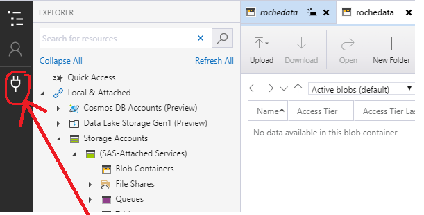
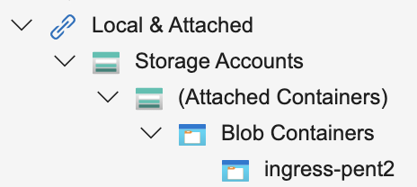
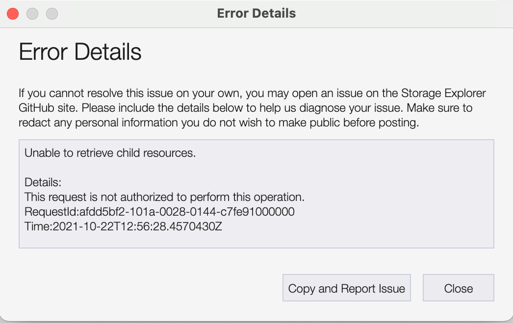

Data egress process¶
The outputs of the work being done in a Data Safe Haven are also stored in the SRE. There are technical and policy controls that must be satisfied before any data can be brought out of the Data Safe Haven.
Classification¶
The first stage of egressing outputs is to classify them. This follows the same workflow as for data ingress.
Hint
Get the same people who ran the ingress classification process to do this - data provider representive, investigator and referee (optional).
Note
Each time you want to bring code or data out of the environment, you’ll have to classify this data as a new work package.
Once the outputs are classified, the classification team should let the System Manager know who will be performing the egress and how they want this to be done.
Downloading data from the environment¶
As for ingress, there are three methods for transferring data out of the Data Safe Haven (in order of preference):
Danger
Under no circumstance should sensitive data be sent via email, even if encrypted.
Azure Storage Explorer¶
Similarly to the equivalent data ingress process
Important
You must be able to receive a secure email.
You must know the public IP address(es) that are used by the people in your organisation who will be downloading the data.
When your System Manager receives the IP address(es) they will send a secure email to the designated uploader. This will contain the secure access token, which has read and list privileges, allowing the downloader to:
download files
view all files available for download
Attention
The secure access token does not permit files to be uploaded or deleted. This provides additional protection in case the token is accidentally leaked. In the event that the token is leaked, inform your System Manager who can revoke it.
Danger
Note that a malicious actor in your permitted IP address range (for example at your organisation) who gets hold of the token will be able to download these outputs.
Click the socket image on the left hand side
On
Select Resource, chooseBlob containerOn
Select Connection Method, chooseShared access signature URL (SAS)and hitNextOn
Enter Connection Info:
Set the
Display nametoingress(or choose an appropriate name)Copy the SAS URL that the administrator sent you via secure email into the
Blob container SAS URLbox and hitNext
On the
Summarypage:
Ensure the permissions include
Write&List(if not, you will be unable to upload data and should contact the administrator who sent you the token)Hit
Connect
On the left hand side, the connection should show up under
Local & Attached > Storage Accounts > (Attached Containers) > Blob Containers->ingress (SAS)You should now be able to download data to the Safe Haven by clicking the
Downloadbutton, completing the egress process
Error
If you receive an error like the following
This means that your IP address is not one that you told the System Manager about.
Get your IT team to check with the System Manager and change the set of IP addresses you’ll be using if necessary.
SFTP¶
If you are unable to install Microsoft Azure Storage Explorer on your system, the next best option is to use SFTP.
Check that your System Manager is able to set up an SFTP server for you to access.
In order to connect:
The System Manager should send you a secure email with the address of the SFTP server.
They should send a separate secure email with connection details for accessing the server.
You should be able to use these details to download the encrypted outputs.
Once downloaded, you should ask the System Manager to send you a secure email with the decryption key.
Caution
Please check with your System Manager to ensure that they use an encryption method that you are able to decrypt.
Request a physical disk¶
Alternatively, you can request your data on a physical disk/USB stick. Check whether your System Manager is happy to do this for you.
Request delivery/courier of the device from the hosting institution.
Once received, you should ask the System Manager to send you a secure email with the decryption key.
Caution
Please check with your System Manager to ensure that they use an encryption method that you are able to decrypt.